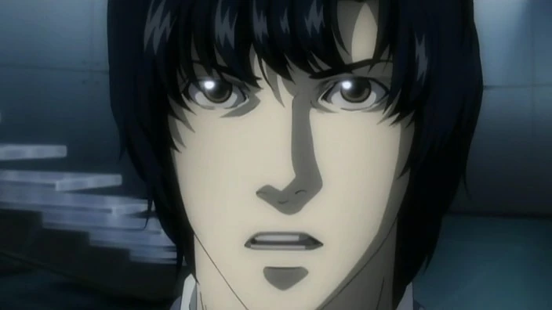
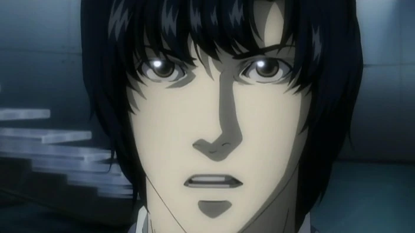

Kira, vlastním jménem Light Yagami, je hlavní postava v anime a manga sérii Death Note. Je to nadaný student, který po nalezení mystické sešitu, známého jako Death Note, získá schopnost zabíjet kohokoli, jehož jméno napíše do sešitu. Své schopnosti využívá k tomu, aby se stal "bohem nového světa" a zbavil zločiny ve společnosti, což ho vede k neustálému konfliktu s detektivem L, který se ho snaží chytit. Light je vysoce inteligentní, manipulativní a charizmatický, ale postupně se ukazuje, že jeho vize spravedlnosti je zkreslená jeho egem a touhou po absolutní moci.
L je geniální detektiv, který vyšetřuje případ Kiry. Své pravé jméno a identitu skrývá, vystupuje pod pseudonymem a komunikuje prostřednictvím technologie. Je známý svými neortodoxními metodami a vynikajícími analytickými schopnostmi. Ačkoliv jeho chování působí podivně, jako neustálé sezení v podřepu nebo závislost na sladkostech, je brilantním stratégem. L je odhodlán odhalit pravdu a dostat Kiru, což ho přivádí do konfliktu s Lightem Yagamim. Ztělesňuje spravedlnost a je připraven obětovat vše, aby dosáhl cíle.
Watari, vlastním jménem Quillsh Wammy, je tajemný a klidný muž, který slouží jako nepostradatelný pomocník a důvěrník geniálního detektiva L. Díky svému organizovanému přístupu a nenápadné, ale efektivní podpoře umožňuje L naplno se soustředit na vyšetřování. Watari je také zakladatelem Wammyho domu, sirotčince pro nadané děti, kde byli vychováni L, Near a Mello. I přes svůj nenápadný vzhled a klidné vystupování je nesmírně schopný, zajišťuje logistiku, finanční podporu a bezpečí během komplikovaných vyšetřování. Jeho tichá síla a loajalita k L zdůrazňují jeho důležitost v celém příběhu, přičemž často zůstává v pozadí událostí, ale nikdy ne bez vlivu.
Misa Amane je jednou z hlavních postav v anime Death Note. Je to mladá a atraktivní modelka, která se stane oddanou následovnicí Kiry, poté co se dostane k Death Note a zjistí o jeho schopnostech. Misa je emotivní, impulzivní a velmi loajální, což jí činí oběťmi manipulací ze strany Kiry, kterého zbožňuje a považuje za svého "boha". Její osobnost je kontrastní – na jednu stranu je to křehká dívka plná soucitu, na druhou stranu je schopná udělat i radikální kroky pro splnění svých cílů. Misa je také známá svou nevinnou, ale přitom nebezpečnou zdatností s Death Notem, díky čemuž se stává důležitým hráčem v boji mezi L a Kira.
Soichiro Yagami je klidný a zodpovědný policista, který slouží jako šéf speciální vyšetřovací jednotky zaměřené na chycení Kiry. Jako otec a manžel je silně motivován ochránit svou rodinu a zároveň vykonávat spravedlnost, což ho činí oddaným své práci i morálním zásadám. Soichiro je rozvážný a spravedlivý, ale v boji proti Kirovi ukáže i svou tvrdost a odhodlání, přičemž se nebojí jít do rizika, když jde o dosažení cíle. I když není tak intelektuálně vybavený jako L, jeho analytické schopnosti, čestnost a oddanost zákonu ho činí významným hráčem v celém vyšetřování. Jeho silná vůle a loajalita k rodině a práci jsou v kontrastu s Kirovým morálním relativismem a ambicemi.
Teru Mikami je postava, která se objevuje jako fanatický stoupenec Kiry. Je to bývalý prokurátor s silným smyslem pro spravedlnost, který věří, že Kira je nástroj pro odstranění zla ve světě. Mikami je velmi oddaný Kirovi a doslovně se řídí jeho přikázáními, což ho činí nebezpečným, protože jeho morální zásady jsou extrémně černobílé. Na rozdíl od Kiry je Mikami ochoten okamžitě jednat a nemá žádné pochybnosti o správnosti svého jednání. Je metodický, nekompromisní a velmi přesvědčený o své misi, což ho činí silným a nebezpečným spojencem Kiry. Mikami je charakterizován svou intenzivní loajalitou a je ochoten riskovat všechno pro splnění svého cíle.
Near, skutečný jménem Nate River, je klíčovou postavou v závěru Death Note a stojí stejně jako L v boji proti Kirovi. I když je na první pohled klidný, introvertní a chladný, jeho brilantní mysl a strategické myšlení ho činí přímým vyzyvatelem Kiry. Na rozdíl od L, který je excentrický a emotivní, Near se vyznačuje větší racionalitou a formálním chováním, což ho činí ještě těžším protivníkem, protože se nikdy neodchyluje od svého logického myšlení. V průběhu vyšetřování se Near spoléhá na kombinaci důkazů a psychologických manipulací, využívá svůj tým a v závěrečných fázích hry se ukáže jako mistr v předvídání Kirových tahů.
Ryuk je shinigami (bůh smrti). Má humanoidní vzhled s výraznými, dlouhými vlasy, žlutýma očima s černými zorničkami a kostěnou, poněkud děsivou postavou. Jeho vzhled a chování jsou spíše neformální a chaotické, což odráží jeho neosobní přístup k životům lidí. Ryuk je zodpovědný za pád Death Note do lidského světa. Ryuk se chová spíše jako pozorovatel než aktivní účastník, přičemž se baví sledováním Lightova vzestupu i pádu, aniž by se sám příliš angažoval. Jeho motivace jsou převážně zvědavost a nuda, protože shinigami nemají v životě žádné skutečné cíle kromě zábavy.